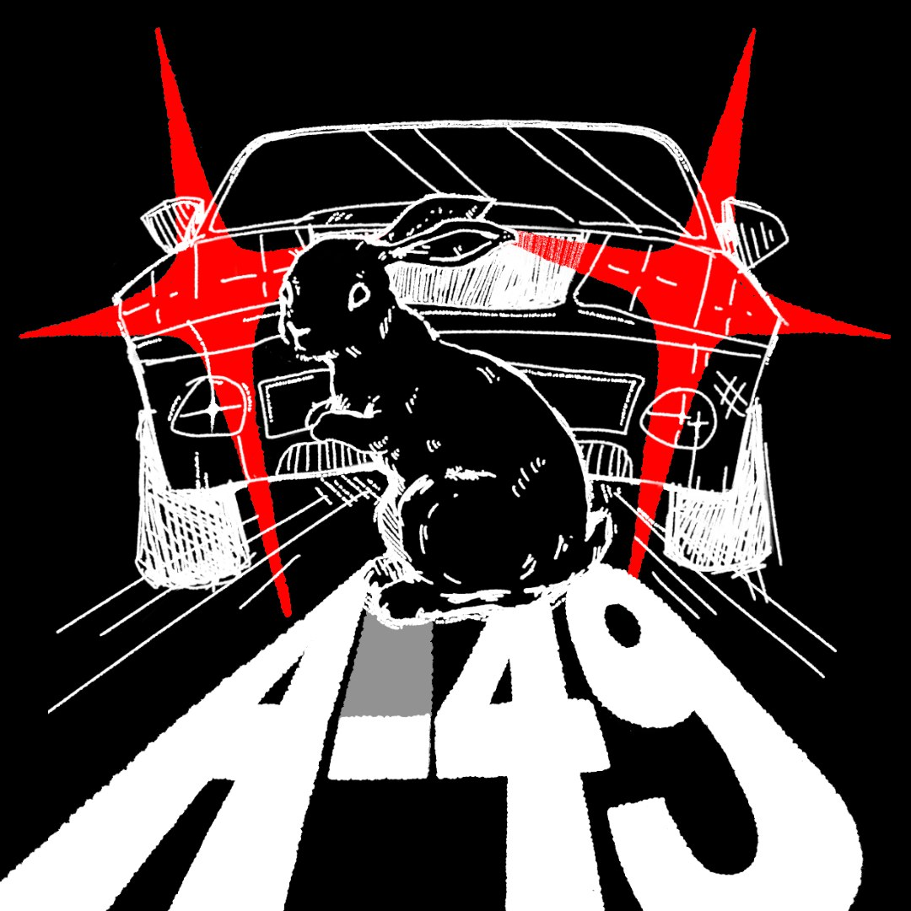
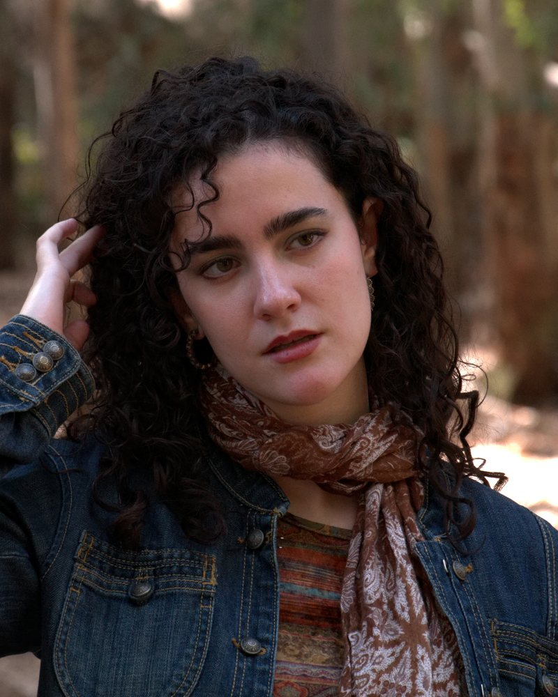
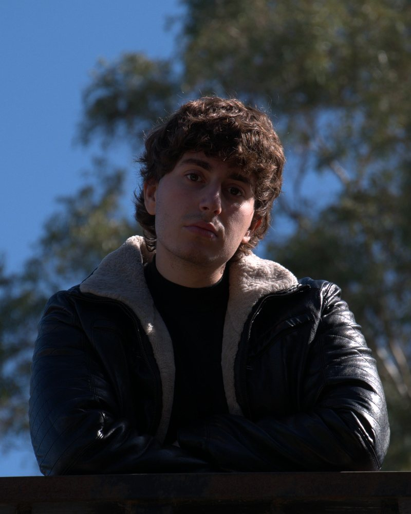
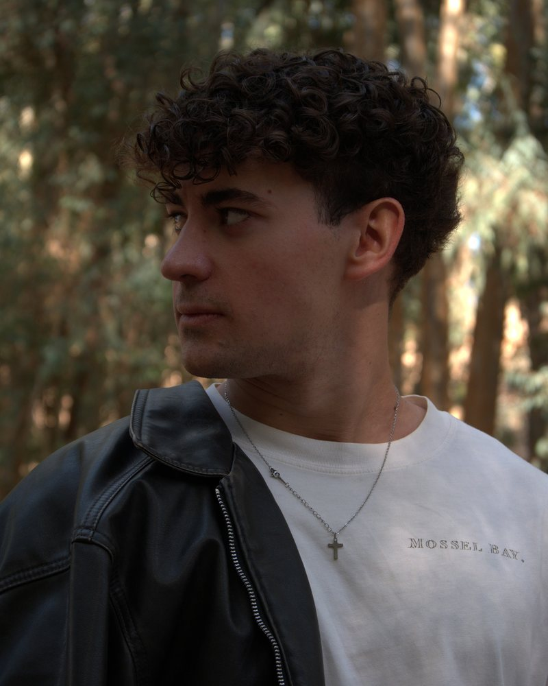
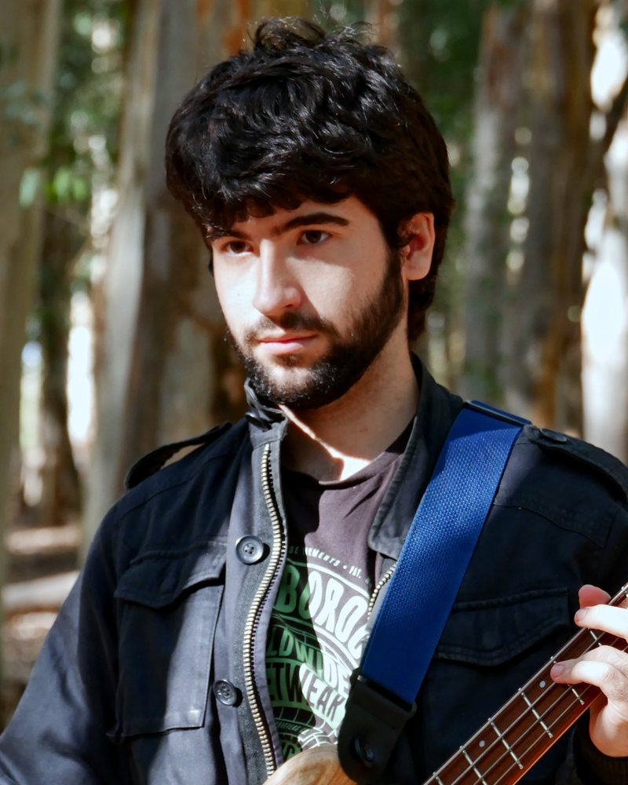
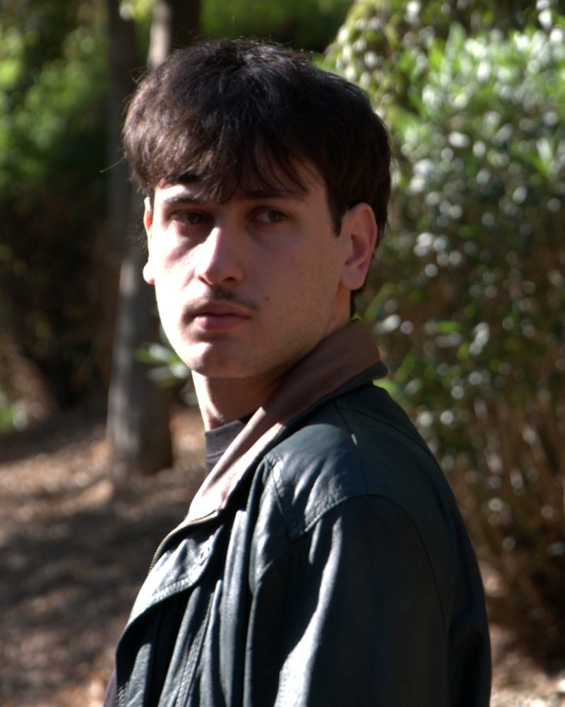
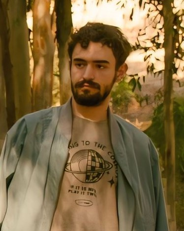

La banda
A-49 es una banda de Sevilla formada por seis músicos que fueron encontrando su espacio común entre ensayos, amistad y ganas de experimentar. El proyecto comenzó cuando Javi y Guille buscaban músicos con quienes montar una banda y fue creciendo hasta consolidar una formación de seis integrantes.
Su sonido combina referencias de rock alternativo, funk y punk, con una actitud abierta a mezclar influencias y a buscar una identidad propia.
Seis formas de
entender la música
A-49 reúne seis sensibilidades distintas: Marina, Javi, Guille, Jesús, Carlos y Nico aportan ideas y puntos de vista que confluyen en lo que es la banda.
El enfoque de la banda se centra en el aprendizaje, la búsqueda de sonidos nuevos y dejar espacio para que distintas ideas musicales convivan. Enriqueciendo lo que hacemos y dando un soplo de aire fresco a la escena musical.
Un sonido
en construcción
En A-49, la música parte de influencias muy distintas: el rock progresivo y el metal conviven con el jazz fusion y el funk.
Cada integrante llega con su propio universo musical. Encontrar un sonido común no consiste en seguir una única referencia, sino en explorar qué ocurre cuando esas influencias se encuentran y armonizan en lo que tiene por ahora la banda.
El resultado es un proyecto abierto al contraste y a la experimentación. No se trata de encajar en una sola etiqueta, sino de descubrir qué surge cuando seis maneras distintas de escuchar música empiezan a tocar juntas.
Del ensayo
al escenario
El ensayo es el espacio donde esas ideas se ponen a prueba y las canciones van tomando forma. Puede ocurrir que la intención de alguien con una idea acabe transformándose en una canción con un propósito totalmente distinto.
El directo es el siguiente paso: compartir ese trabajo con el público y seguir aprendiendo como banda. Nuestra propuesta está en evolución, igual que nuestro sonido.
Las dos guitarras de Javi y Carlos, el ritmo del bajo de Jesús y la batería de Guille, el teclado de Nico y la voz de Marina: seis instrumentos que comparten un mismo espacio sonoro y construyen juntos el sonido de A-49.






El primer paso
· Sala Malandar, Sevilla
A-49 subió por primera vez a un escenario, en la sala Malandar de Sevilla. Fue el paso de los ensayos y los meses de preparación a compartir el proyecto con el público.
“Por el gran apoyo que habían recibido, pero también por el proceso, el aprendizaje y la confirmación de que A-49 ya no era solo una idea que nació entre ensayos y búsquedas improvisadas, sino una banda real que acababa de dar su primer paso sobre un escenario.” Bolosur, A-49, la unión ante el caos
Próximos conciertos
-
Fun ClubSevillaEntradas
Contacto y
contratación
Si quieres conocer nuestra música, organizar una actuación o ponerte en contacto con la banda, puedes encontrarnos aquí.